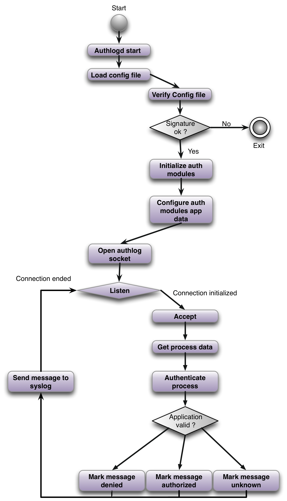

Authlogd is a server which authenticates syslog messages logged through the socket on which server is listening. Authlogd keep list of authenticated loggers in a configuration file and verify every message sender against this list.
Authentication is done by adding one SD element with local defined SD element ID, auth message and DSA made to protect whole auth SD element.
Authlogd requires some libc patches(or you need to set up you application to log though different socket than /var/run/log), openssl an libevent libraries. Daemon requires proc filesystem mounted in /proc directory in a Linux compatible mode.
As a configuration file we use externalized proplib dictionary with two entries. First entry is "config" and the second one is "sign". Sign part of file contains DSA hash of config part. Example config file can be found at config file
./authlogd -c doc/authlogd_app.xml -p doc/dsapubkey.pem -P doc/dsaprivkey.pem -C doc/dsacert.pem
make && atf-run | atf-report
openssl dsaparam -noout -out dsakey.pem -genkey 1025
openssl req -new -x509 -key dsakey.pem -out dsacert.pem -days 1095
openssl dsa -in dsakey.pem -pubout -out dsapubkey.pem
openssl dgst -sha1 -sign doc/dsaprivkey.pem -keyform PEM -hex {filename to sign}
openssl dgst -sha1 -verify doc/dsapubkey.pem -signature {signature file} {signed file}
authlogd -c doc/authlogd_app.xml -d -> dump singing part of configuration to config.xml
2 clause BSD license
You can download this project in either zip or tar formats.
You can also clone the project with Git by running:
$ git clone git://github.com/haad/authlogd